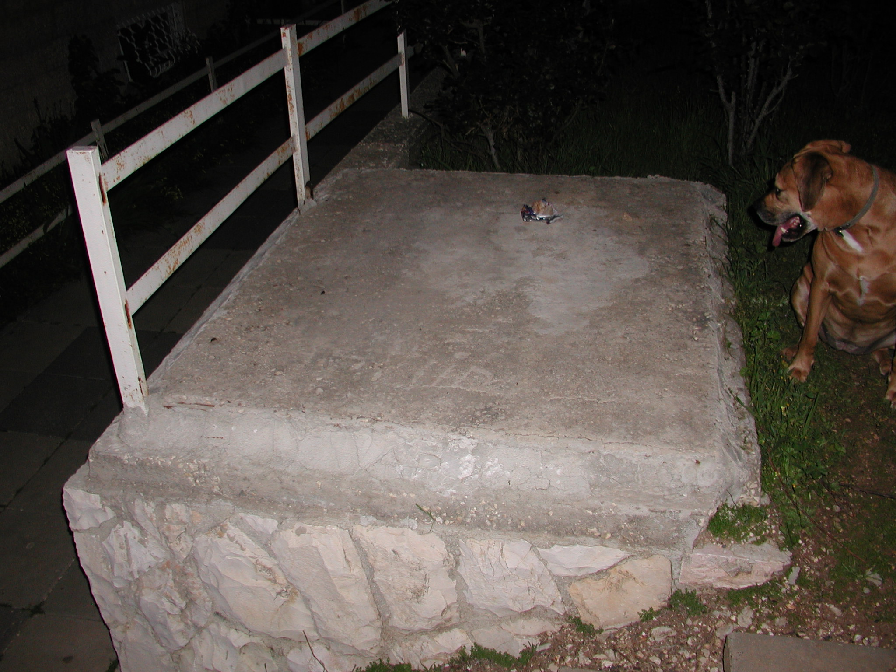

Talpiot Tomb

- Find Name
- Talpiot Tomb
- Description
- A rock-cut family tomb found during construction in East Talpiot in 1980 and excavated by Amos Kloner for the Israel Antiquities Authority, containing ten ossuaries, six inscribed: 'Yeshua bar Yehosef' (Jesus son of Joseph), 'Maria,' 'Yose,' 'Mariamne e Mara,' 'Yehuda bar Yeshua' (Judah son of Jesus), and one partially illegible. A 2007 documentary and book claimed this was the family tomb of Jesus of Nazareth. DOUBT STATED, IN FULL: every one of these names was extremely common in first-century Judea; 'Mariamne' has no established link to Mary Magdalene (the Acts of Philip connection is speculation); the excavator himself rejected the identification; the statistical case has been widely debunked; and the claim contradicts the Gospel accounts of Jesus's burial and resurrection and all early Christian tradition about it. The scholarly consensus, voiced by Geza Vermes and Jodi Magness among others, is that the 'Jesus family tomb' theory is sensational and without scientific basis. The tomb itself is genuine; the identification is not accepted.
- Historical Period
- Roman
- Evidence Class
- Disputed
- Interpretations
- The ossuaries are authentic first-century boxes and their inscriptions are real; what is disputed is everything built on them. No reputable case survives the commonness of the names, the unsupported Mariamne-Magdalene equation, and the contradiction with the burial narratives. This entry must never be presented as a candidate family tomb of Jesus without the doubt above.
- Alternative Names
- Talpiyot Tomb; Jesus Family Tomb (disputed claim)
- Related Places
- Related Books
- Related Events
- Related People
- Scripture Illuminated
- Biblical Significance
- Included in BORDERLINE only so readers meet the claim with its refutation attached: the tomb is the most famous cautionary case in biblical archaeology, showing why a cluster of common names is not an identification. Its proper illumination is negative — it clarifies, by contrast, what the Gospels actually record about Jesus's burial in a new tomb (Matthew 27:57-60) and his empty tomb on the third day.
- Artifact Date
- 1st century AD
- Current Location
- Sealed and not open to the public, East Talpiot, Jerusalem
- Date Discovered
- 1980
- Discovery Location
- East Talpiot, Jerusalem, Israel
- Timeline Era
- Life of Christ
Awaiting Review Not yet checked against scholarly sources. Treat its claims as provisional until this entry is reviewed. About verification
Last reviewed: not yet reviewed